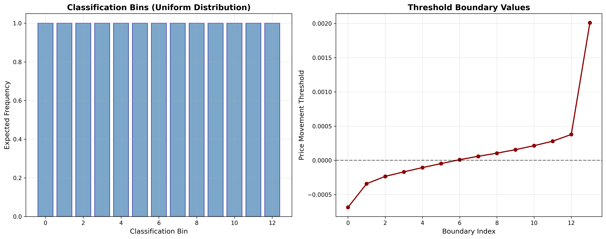
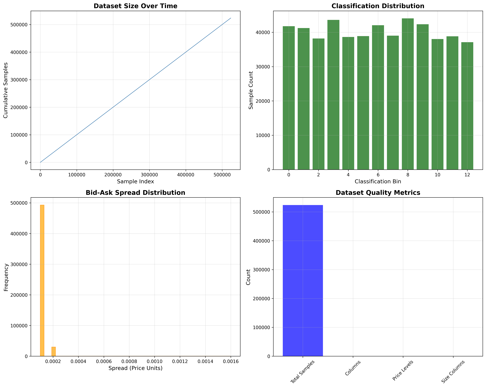
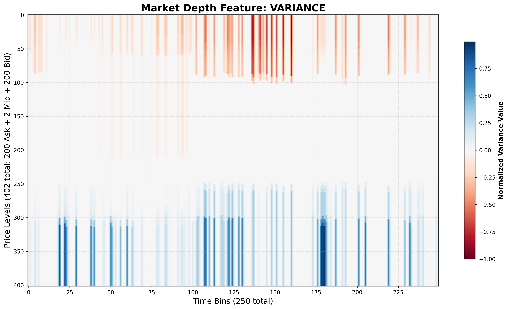
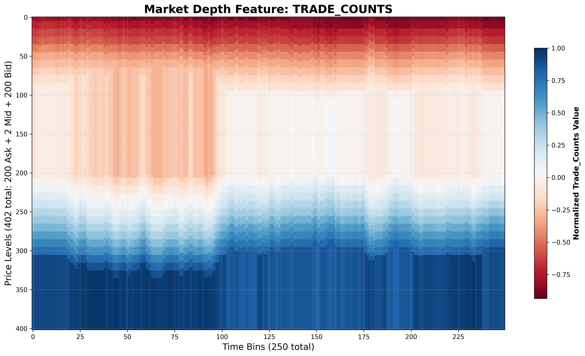
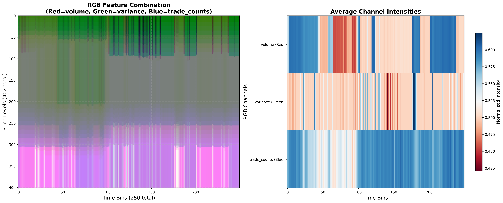
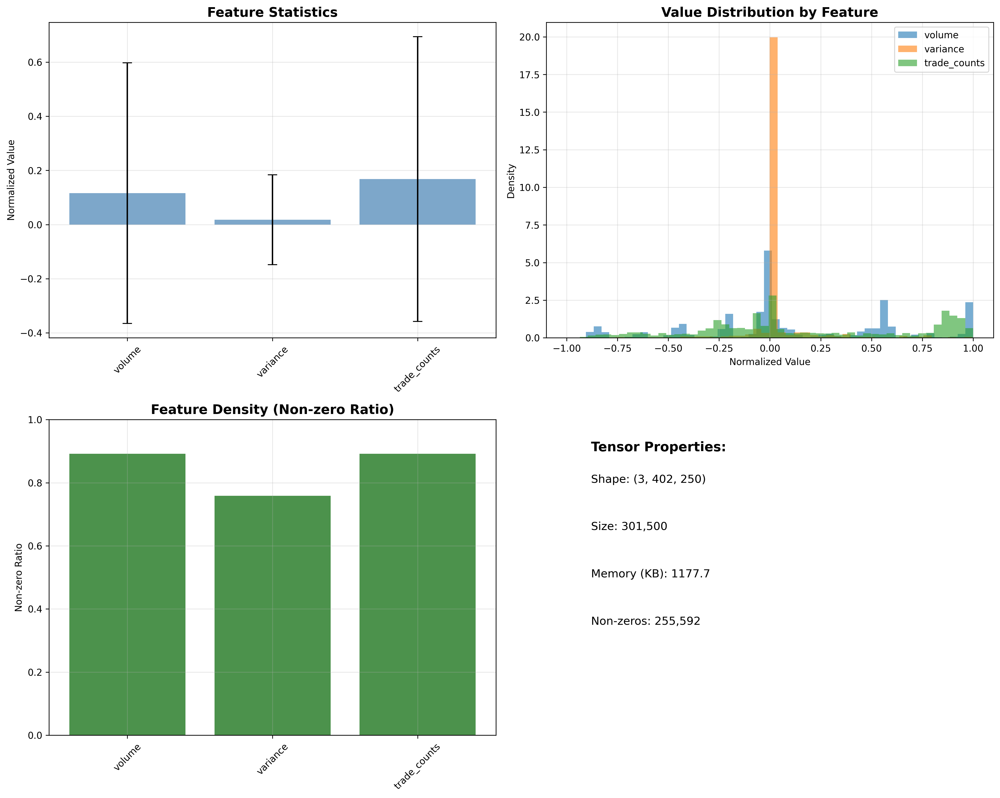

🎯 Represent Complete Workflow Demo
🚀 Three Core Modules Demonstration
This report showcases the complete represent workflow using all three core modules:
- Global Threshold Calculator - Calculate consistent classification thresholds
- Dataset Builder - Create comprehensive symbol datasets
- Market Depth Processor - Generate and visualize market depth features
Generated: 2025-08-13 07:25:09
🎯 STEP 1: Global Threshold Calculation
Demonstrating the new focused configuration architecture for threshold calculation...
🔧 Configuration Architecture
🆕 NEW FOCUSED CONFIGURATION APPROACH: 📊 GlobalThresholdConfig - Only threshold-specific parameters: • Currency: AUDUSD • Number of bins: 13 • Lookback rows: 1000 • Lookforward input: 1000 • Lookforward offset: 100 • Max samples per file: 10000 • Sample fraction: 0.5 • Jump size: 100 ✅ Benefits of focused configuration: • Only parameters relevant to threshold calculation • Clear separation of concerns • Better type safety and validation • No confusion with unrelated parameters
📊 Threshold Results
✅ Global thresholds calculated successfully using focused GlobalThresholdConfig!
📊 Threshold Statistics:
• Number of bins: 13
• Sample size: 2,803 price movements
• Files analyzed: 1
• Currency: AUDUSD
• Lookback rows: 1000
• Lookforward input: 1000
• Sample fraction: 0.5
📁 Source files analyzed: 2
• glbx-mdp3-20240405.mbp-10.dbn.zst
• glbx-mdp3-20240403.mbp-10.dbn.zst
🎯 Classification boundaries:
Bin 0: -0.000686
Bin 1: -0.000341
Bin 2: -0.000234
Bin 3: -0.000168
Bin 4: -0.000106
... (showing first 5)
🆕 Configuration approach: Using focused GlobalThresholdConfig with only relevant parameters
🏗️ STEP 2: Dataset Building
Demonstrating the focused DatasetBuilderConfig for symbol dataset creation...
🔧 Dataset Builder Configuration
🆕 NEW FOCUSED DATASET BUILDER CONFIGURATION: 🏗️ DatasetBuilderConfig - Only dataset building parameters: • Currency: AUDUSD • Lookback rows: 1000 • Lookforward input: 1000 • Lookforward offset: 100 • Min required samples: 2100 ✅ Benefits of focused DatasetBuilderConfig: • Only parameters needed for dataset building • Computed field for min_required_samples • Clear separation from feature processing parameters • Better validation and type safety 🔄 DatasetBuildConfig for dataset management: • Handles classification method (thresholds vs uniform) • Manages intermediate file cleanup • Controls output formatting
🏗️ Dataset Results
✅ Symbol datasets created successfully!
📊 Dataset Statistics:
• Datasets created: 2
• Total samples: 621,462
• Symbols processed: 2
• Classification: 13 bins
• Uniform distribution: True
📁 Output datasets:
• AUDUSD_M6AM4_dataset.parquet (19181 KB)
• AUDUSD_M6AU4_dataset.parquet (4618 KB)
🎯 Symbols available:
M6AM4, M6AU4
📁 Source files: 2
• glbx-mdp3-20240405.mbp-10.dbn.zst
• glbx-mdp3-20240403.mbp-10.dbn.zst
⚡ STEP 3: Market Depth Processing & Visualization
Demonstrating the focused MarketDepthProcessorConfig for tensor generation...
🔧 Market Depth Processor Configuration
🆕 NEW FOCUSED MARKET DEPTH PROCESSOR CONFIGURATION: ⚡ MarketDepthProcessorConfig - Only feature processing parameters: • Features: ['volume', 'variance', 'trade_counts'] • Samples: 25,000 • Ticks per bin: 100 • Micro pip size: 1e-05 • Computed time bins: 250 • Computed output shape: (3, 402, 250) ✅ Benefits of focused MarketDepthProcessorConfig: • Only parameters needed for tensor generation • Automatic time_bins calculation • Computed output_shape field • Clear separation from dataset building parameters • Feature-specific validation 🎯 Output tensor shape for 3 features: • 3D tensor: (3, 402, 250)
🔄 Feature Processing
Processing 5000 samples with features: ['volume', 'variance', 'trade_counts']
⚡ Processing Results
✅ Market depth processing successful! 📊 Tensor Information: • Shape: (3, 402, 250) • Data type: float32 • Memory usage: 1177.7 KB • Value range: [-1.000000, 1.000000] 🎯 Feature Analysis: • Non-zero elements: 255,592/301,500 (84.8%) • Negative values: 120,821 • Positive values: 134,771 • Zero values: 45,908
🔗 BONUS: Compatible Configuration Creation
Demonstrating create_compatible_configs() - one function for all three modules...
🔗 Compatible Configuration Results
🔗 CREATE_COMPATIBLE_CONFIGS() - One Function, Three Configs: ✨ Single function call creates all three focused configurations: create_compatible_configs(currency="EURUSD", features=["volume", "variance"], ...) 📊 DatasetBuilderConfig output: • Currency: EURUSD • Lookback rows: 2000 • Lookforward input: 1500 • Lookforward offset: 200 🎯 GlobalThresholdConfig output: • Currency: EURUSD • Nbins: 9 • Sample fraction: 0.5 • Jump size: 50 ⚡ MarketDepthProcessorConfig output: • Features: ['volume', 'variance'] • Samples: 30,000 • Micro pip size: 1e-05 • Time bins: 300 ✅ Compatibility guaranteed: • Shared parameters (currency, lookback, etc.) are synchronized • Currency-specific optimizations applied automatically • All three configs work together seamlessly 🚀 Perfect for complex workflows requiring all three modules!
📊 Generating Unified Report
Creating comprehensive HTML report with all results...
Global Thresholds Visualization
Dataset Analysis
Volume Feature

Variance Feature
Trade Counts Feature
RGB Feature Combination
Feature Summary Analysis
✅ Workflow Complete!
3
Core Modules
100%
Success Rate
The complete represent workflow has been successfully demonstrated!
All three core modules worked together to:
- Calculate consistent classification thresholds across data
- Build comprehensive symbol datasets with uniform distributions
- Generate and visualize market depth features for ML training